용접기사 (2010-03-07 기출문제)
1과목: 기계제작법
1. 연삭작업을 할 때 절삭공구와 같이 재 연삭이 필요없는 이유는 입자가 마멸-파쇄-탈락-생성이 되풀이 되기 때문이다. 이러한 현상을 무엇이라 하는가?
- 로딩(loading)
- 글레이징(glazing)
- 트루잉(truing)
- 자생작용
(정답률: 67%)

2. 내경 측정에 주로 이용되는 측정기는?
- 실린더 게이지
- 하이트 게이지
- 측장기
- 게이지 블록
(정답률: 60%)
3. 소성변형이 비교적 잘 되는 금속재료를 상온 또는 고온에서 회전하는 롤 사이로 통과시켜 여러 가지의 판재, 형재, 관재 등의 소재를 만드는 가공법은?
- 전조
- 프레싱
- 압연
- 단조
(정답률: 83%)
4. 전해연마에 관한 설명으로 틀린 것은?
- 공작물을 전해액 속에서 전기화학적 방법으로 필요한 형상을 가공한다.
- 공작물을 양극으로 통전한다.
- 기계가공에서 생기는 가공 변질층이 생기지 않는다.
- 알루미늄과 같은 연질재료에는 광택면을 쉽게 가공할 수 없다.
(정답률: 75%)
5. 주조에 사용되는 목재의 변형을 방지하기 위한 방법으로 거리가 먼 것은?
- 질이 좋은 목재를 선택할 것
- 벌채 시기는 여름철에 할 것
- 목재 조각을 여러개 조합하여 사용할 것
- 도장을 적절하게 할 것
(정답률: 75%)
6. 용접에서 가스 가우징(gas gouging)이란?
- 열원을 가스화염에서 얻는 일종의 맞대기 용접이다.
- 용접 부분의 뒷면을 따내거나 강재의 표면에 둥근홈을 파내는 가스가공이다.
- 모재에 홈을 파고 가스건으로 모재와 용접봉을 가열하여 눌러 붙이는 작업이다.
- 가스절단시 절단성을 판정하는 기준이다.
(정답률: 80%)
7. 목형용 재료로 사용하는 목재의 방부법에 해당되지 않는 것은?
- 야적법
- 도포법
- 침재법
- 삶는법
(정답률: 18%)
8. 회전하는 상자속에 공작물과 숫돌입자, 공작액, 컴파운드 등을 넣고 서로 충돌시켜 표면의 요철(凹凸)을 제거하며 매끈한 가공면을 얻는 방법은?
- 호닝(honing)
- 숏 피닝(shot peening)
- 배럴(barrel)가공
- 슈퍼 피니싱(super finishing)
(정답률: 53%)
9. 알루미늄, 구리 등의 재료를 컨테이너에 넣고 강력한 압축력을 주면 다이오리피스(die orifice)를 통과시여 원하는 제품으로 가공하는 방법은?
- 압출(押出)가공
- 인출(引出)가공
- 프레스(press)가공
- 인발(引拔)가공
(정답률: 79%)
10. 박스 지그(box jig)는 주로 어떤 작업에 가장 많이 사용되는가?
- 연삭기에서 테이퍼 가공을 소량으로 할 때
- 선반작업에서 크랭크를 절삭 할 때
- 소량의 밀링작업을 할 때
- 가공물에서 여러 방향의 드릴작업을 할 때
(정답률: 80%)
11. 가공의 영향으로 생긴 스트레인이나 내부 응력을 제거하고 미세한 표준조직으로 기계적 성질을 향상시키는 열처리 방법은?
- 소프트닝
- 보로나이징
- 하드 패이싱
- 노멀라이징
(정답률: 77%)
12. 길이 50mm, 지름 4mm의 제품을 선반으로 가공한다. 86m/min 의 절삭속도와 0.1mm/rev 의 이송 속도로 가공한다면 1회 작업 시 작업에 요하는 가공 시간은 약 몇 분 인가?
- 7.3
- 4.2
- 11.5
- 9.4
(정답률: 25%)
13. 아크 용접에서 아크가 한쪽으로 편향하는 현상은?
- 아크 코어(arc core)
- 자기 불림(magnet blow)
- 아크 스트림(arc stream)
- 자기 화염(magnet flame)
(정답률: 67%)
14. 소성가공에서 열간가공과 냉간가공 구별의 기준 온도는?
- 단조온도
- 재결정온도
- 변태온도
- 담금질 온도
(정답률: 85%)
15. 게이지 블록의 치수 안정도 등급에 해당하지 않는 것은?
- P급
- 0급
- 1급
- 2급
(정답률: 50%)
16. 프레스 가공 방식 중 굽힘 성형 가공에 해당하는 것은?
- 펀칭(punching)
- 트리밍(trimming)
- 컬링(curling)
- 셰이빙(shaving)
(정답률: 64%)
17. 조미니(jominy)시험은 어떤 시험에 해당하는가?
- 경도(硬度)시험
- 경화능(硬化能)시험
- 취성(脆性)시험
- 냉각성(冷却性)시험
(정답률: 59%)
18. 높은 정밀도의 보링 가공을 할 수 있는 것으로 온도변화에 따른 영향을 받지 않도록 항온습실에 설치하여야 하는 것은?
- 보통 보링 머신
- 지그 보링 머신
- 수직 보링 머신
- 코어 보링 머신
(정답률: 58%)
19. 다이에 아연, 납, 주석 등의 연질금속을 넣고 제품 형상의 펀치로 타격을 가하여 길이가 짧은 치약 튜브, 약품튜브 등을 제작하는 압출은?
- 직접 압출
- 간접 압출
- 열간 압출
- 충격 압출
(정답률: 72%)
20. 지름 91mm의 강봉을 회전수 700rpm으로 선삭하는데 잘삭 저항의 주분력이 725.75N 이다. 이 때 기계적 효율이 80% 이라고 하면 여기에 공급되어야 할 동력은 몇kw 인가?
- 3.03
- 4.17
- 6.56
- 8.17
(정답률: 39%)
2과목: 재료역학
21. 주응력에 대한 설명으로 틀린 것은?
- 주응력 상태에서 전단응력은 0이다.
- 주응력은 전단응력이다.
- 최대 전단응력은 주응력의 최대, 최소값의 평균치이다.
- 평면응력에서 주응력은 2개이다.
(정답률: 39%)
22. 어떤 탄성재료의 탄성계수 E와 전단계수 G사이에 성립하는 관계식으로 맞는 것은?
- E = 2(1+υ)G
- G = 2(1+υ)E
- E = 2G / 1+υ
- G = 2E / 1+υ
(정답률: 50%)
23. 반지름이 r 인 원형 단면에 단순보에 전단력 F 가가해졌다면, 이 때 단순보에 발생하는 최대 전단 응력은?
- 3F / 2πr2
- 2F / 3πr2
- 4F / 3πr2
- 5F / 3πr2
(정답률: 47%)
24. 단면은 폭 5cm× 높이 3cm, 길이가 1m의 단순지지보가 중앙에 집중하중 4kN을 받을 때 발생하는 최대 굽힘응력은 약 몇 MPa, 인가?
- 133
- 155
- 143
- 125
(정답률: 34%)
25. 길이가 L 이고 단면적이 A 인 봉의 단면에 수직 하중이 작용하고, 작용하중 방향으로 변형률 ε 이 발생하였다면 이 봉에 저장된 탄성에너지 U는 어떻게 표현되는가? (단, 봉의 탄성계수는, E이다.)
- EεAL
- Eε2AL / 2
- EεAL / 2
- EεAL / 4
(정답률: 43%)
26. 단면적이 같은 원형과 정사각형의 단면 계수의 비는?
- 1 : 0.509
- 1 : 1.18
- 1 : 2.36
- 1 : 4.68
(정답률: 64%)
27. 직사각형 단면(폭×높이)이 4cm×8cm이고 길이 1m의 외팔보의 전 길이에 6kN/m의 등분포하중이 작용할때 보의 최대 처짐각은? (단, 탄성계수 E = 210GPa이고 보의 자중은 무시한다.)
- 복원중
- 복원중
- 복원중
- 복원중
(정답률: 32%)
28. 그림과 같은 구조물에 1000N의 물체가 매달려 있을때 두 개의 강선 AB와 AC에 작용하는 힘의 크기는 약 몇 N인가?
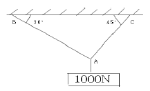
- AB =707, AC = 500
- AB =732, AC = 897
- AB =500, AC = 707
- AB =897, AC = 732
(정답률: 38%)
29. 길이 15m, 지름 10mm의 강봉에 8kN의 인장 하중을 걸었더니 탄성변형이 생겼다. 이때 늘어난 길이는?
- 7.3m
- 7.3cm
- 0.73mm
- 0.073mm
(정답률: 28%)
30. 최대 사용강도(σmax) = 240MPa, 지름 1.5m, 두께 3mm의 강재 원통형 용기가 견딜 수 있는 치대 압력은 몇 KPa 인가? (단, 안전계수(SF)는 2 이다.)
- 240
- 480
- 960
- 1920
(정답률: 56%)
31. 그림과 같은 돌출보가 있다. ωℓ=P일 때 이 보의 중앙점에서 굽힘 모멘트가 0 이 되기 위한 길이의 비a/ℓ는?
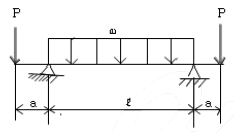
- 1/4
- 1/8
- 1/16
- 1/24
(정답률: 35%)
32. 지름 3mm의 철사로 평균지름 75mm의 압축코일 스프링 을 만들고 하중 10N에?
- n = 8.9
- n = 8.5
- n = 5.25
- n = 6.3
(정답률: 23%)
33. 등분포 하중을 받고 있는 단순보와 양단 고정보의 중앙점에서의 최대 처짐량의 비는? (단, 보의 굽힘강성 E1는 일정하다.)
- 3 : 1
- 5 : 1
- 24 : 1
- 48 : 1
(정답률: 38%)
34. 지름 d의 축에 암(arm)을 달고, 그림과 같이 하중 P를 가할 때 축에 발생되는 최대 비틀림 전단응력은?
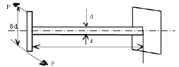
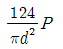
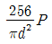
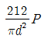
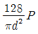
(정답률: 50%)
35. 다음 중 기둥의 좌굴에 대한 설명으로 옳은 것은?
- 좌굴이란 기둥이 압축하중을 받아 길이 방향으로 변위되는 현상을 말한다.
- 도심에 압축하중이 작용하는 기둥의 좌굴은 안정성과 관련되어 있다.
- 좌굴에 대한 임계하중은 길이가 긴 기둥일수록 커진다.
- 편심 압축하중을 받는 기둥에서는 M하중이 커져도 길이 방향 변위만 발생한다.
(정답률: 38%)
36. 지름 7mm, 길이 250mm인 연강 시험편으로 비틀림 실험을 하여 얻은 결과, 토크 4.08Nㆍm에서 비틀림 각이 8˚로 기록되었다. 이 재료의 전단 탄성계수는 약 몇 GPa 인가?
- 64
- 53
- 41
- 31
(정답률: 40%)
37. 그림과 같이 길이가 동일한 2개의 기둥 상단에 중심 압축 하중 2500N이 작용할 경우 전체 수축량은 약 몇 mm인가? (단, 단면적 A1 = 1000mm2, A2 = 2000mm2, 길이 L =300mm, 재료의 탄성계수 E = 90GPa이다.)
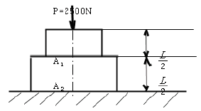
- 0.625
- 0.0625
- 0.00625
- 0.000625
(정답률: 37%)
38. 그림과 같이 전체 길이가 3L 인 외팔보에 하중 P가 B점과 C점에 작용할 때 자유단B에서의 처짐량은? (단, 보의 굽힘강성, EI는 일정하고, 자중은 무시한다.)
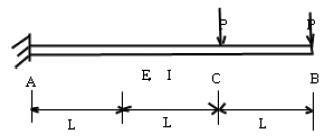
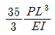
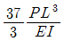
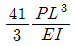
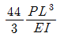
(정답률: 53%)
39. 폭 20cm, 높이 30cm의 직사각형 단면을 가진 길이 300cm의 외팔보는 자유단에서 최대 몇 kN의 하중을 가할 수 있는가? (단, 허용 굽힘응력은 σ = 15MPa 이다.)
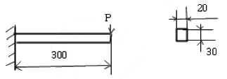
- 12
- 15
- 30
- 90
(정답률: 45%)
40. 연강 1cm3 의 무게는 0.0758N이다. 길이 15m의 둥근봉을 매달 때 봉의 상단 고정부에 발생하는 인장응력은 몇 kPa 인가?
- 0.118
- 1177.5
- 117.8
- 11890
(정답률: 44%)
3과목: 용접야금
41. S-N 곡선에 대한 설명으로 옳은 것은?
- 항온변태 속도를 나타내는 곡석
- 탄소당량을 도시한 곡선
- 인장시험에서 인장력과 연신율을 나타내는 곡선
- 피로시험에서 반복응력과 반복횟수를 나타내는 곡선
(정답률: 53%)
42. 용접봉의 피복제에서 아크 용접시 발생하는 가스 성분인 CO, CO2 , H2O, H2 등의 반응을 바르게 나타낸 것은?
- 3CO + 2H2O ⇄CO + 2CO2 + 2H2
- 2CO + 2H2O ⇄2CO2 + H2O +H2
- 3CO + 3H2O ⇄3CO2 + H2O
- CO + H2O ⇄CO2 + H2
(정답률: 36%)
43. 용접금속에 생기는 기포를 말하는 것으로 용접금속 내부에 존재하는 것은?
- 기공
- 피트
- 은점
- 언터필
(정답률: 69%)
44. 용접과정 중 산화력이 가장 큰 원소는?
- Al
- Mn
- Mo
- V
(정답률: 57%)
45. 스테인리스강용 용접봉의 피복제로 티탄계의 주성분은?
- 루틸
- 석회석
- 형석
- 일미나이트
(정답률: 39%)
46. 금속 중에 용해된 기체성분 중 취화, 지연균열, 은점 등의 용접금속에 가장 악영향을 끼치는 성분은?
- 수소
- 산소
- 질소
- 탄소
(정답률: 69%)
47. 일반 물질계에서 자유도를 F, ,성분수를 C, 상의수를 P라 한면 상률 공식은?
- F = P-C+2
- F = C-P+2
- F = C-P+1
- F = P-C-1
(정답률: 54%)
48. 용극식 용접법이 아닌 것은?
- 피복 아크 용접
- 탄산가스 아크 용접
- 불활성가스 텅스텐 아크용접
- 서브머지드 아크 용접
(정답률: 53%)
49. 용접에서 각종 원소의 탈산력을 비교할 때 탈산력이 가장 낮은 것은?
- W
- Ti
- Si
- Ni
(정답률: 36%)
50. 탄화물의 입계석출로 인하여 입계부식을 일으키는 스테인리스강은?
- 오스테나이트계 스테인리스강
- 페라이트계 스테인리스강
- 마르텐자이트계 스테인리스강
- 펄라이트계 스테인리스강
(정답률: 61%)
51. 피복 아크 용접봉은 심선과 그 주위에 도포된 피복제로 구성되어 있다. 피복제의 기능이 아닌 것은?
- 용착 금속에 필요한 합금 원소를 첨가시킨다.
- 모재 표면의 산화물을 제거하고, 양호한 용접부를 만든다.
- 용착금속의 탈산 정련작용을 하며, 전기절연 작용을 한다.
- 용융금속의 용적을 조대화하여 용착 효율을 낮춘다.
(정답률: 58%)
52. 연강용 피복아크 용접봉 중 철분 저수소계는?
- E4303
- E4316
- E4313
- E4326
(정답률: 71%)
53. 포정반응을 나타내는 합금이 아닌 것은?
- Fe-C 합금
- Au-Fe 합금
- Al-Cu 합금
- Ag-Cu 합금
(정답률: 43%)
54. 가공한 금속을 가열할 때 결정입계의 이동에 의해서 형성되는 쌍정을 무엇이라 하는가?
- 변형쌍정
- 기계적쌍정
- 풀림쌍정
- 소성쌍정
(정답률: 40%)
55. 탄소당량(Ceq)이 일반적으로 몇 % 이하일 때 용접성이 양호한 것으로 판단하는가?
- 1.0%
- 0.4%
- 1.6%
- 0.9%
(정답률: 74%)
56. 순철의 Ag(910°C) 변태를 올바르게 나타낸 것은?
- α- Fe ⇄β- Fe
- α- Fe ⇄γ- Fe
- γ- Fe ⇄δ- Fe
- δ- Fe ⇄α- Fe
(정답률: 42%)
57. 염기도가 가장 높은 용접봉은?
- 일미나이트계
- 고산화티탄계
- 저수소계
- 티탄계
(정답률: 67%)
58. 강읭 용접 열영향부에서 생기는 기계적 성질로 맞는 것은?
- 실온에서 열영향부의 강도는 원래의 강도보다 증가한다.
- 실온에서 열영향부의 연신이나 드로잉(drawing)은 원래의 연신이나 드로잉보다 증가한다.
- 용접부의 냉각속도가 빠르면 강도와 연신율은 증가한다.
- 용접부의 인장강도는 최저가열온도에 의해서만 결정된다.
(정답률: 57%)
59. 봉상 결정의 인장 변형은 미끄럼이 생겨서 진행하는데, 이때의 변형상태를 상세하게 관찰하면 미끄럼 밴드가 형성되어 있는 것을 알 수 있다. 고순도 알루미늄에서 미끄럼 밴드를 형성하고 있는 각각의 층은 얼마정도의 미끄럼이 생기는가?
- 약 2000A
- 약 3000A
- 약 4000A
- 약 5000A
(정답률: 32%)
60. 저온균열을 방지하기위한 대책으로 틀린 것은?
- 용접부의 탄소 당량을 높게 한다.
- 냉각 가속도를 될수록 느리게 한다.
- 저수소계 용접봉을 사용한다.
- 용접봉의 건조를 충분히 한다.
(정답률: 77%)
4과목: 용접구조설계
61. 용접을 진행하는 용접부의 부근을 냉각시켜 열영향부의 넓이를 축소시킴으로써 변형을 방지하는 냉각법의 종류에 해당되지 않는 것은?
- 수냉 동(구리)판 사용법
- 살수법
- 비석법
- 석면포 사용법
(정답률: 62%)
62. 용접부재의 작업순서를 말하는 용접순서를 결정할때 주의사항으로 틀린 것은?
- 모재의 양 끝단에서 중앙으로 용접한다.
- 수축에 의한 변형량이 큰 곳부터 용접을 한다.
- 좌우로 배치되는 구조물은 대칭법으로 비드를 배치한다.
- 동일 평면 내에 이음이 많을 경우 수축은 가능한 자유단으로 보낸다.
(정답률: 62%)
63. 용착효율을 나타내는 설명으로 옳은 것은?
- 용접봉 사용 중량에 대한 용접시간 사용의 비
- 용접봉 사용 중량에 대한 용착금속 중량의 비
- 용착금속의 중량에 대한 용접시간 사용의 비
- 용착금속의 중량에 대한 용접봉 사용 중량의비
(정답률: 53%)
64. 용접시험 중 유화물의 함유량과 분포상태를 검출하는 시험은?
- 부식시험
- 파면시험
- 설퍼프린트시험
- 화학분석시험
(정답률: 62%)
65. 피로강도(Fatigue Strenght)를 정의하는 변동 하중에는 정현파 응력 파형이 있는데 여기에 속하지 않는 것은?
- 완전 양진 파형
- 완전 편진 파
- 부분 편진 파형
- 피로 편진 파형
(정답률: 50%)
66. AW-400인 용접기 11대를 설치하고자 할 때 전원 변압기는 어느 정도 용량을 설치하는 것이 가장 적당한가?
- 84 kVA
- 92 kVA
- 88 kVA
- 104 kVA
(정답률: 50%)
67. 용접변형 방지법 중 구속(억제)법에 대한 설명으로 틀린 것은?
- 적당한 지그가 없을 경우 스트롱 백을 사용한다.
- 스테인레스강 박판 맞대기 이음의 경우 동판을 조합시킨 구속지그를 이용하는 것이 유효하다.
- 맞대기 용접의 경우 잭으로 판을 구속하거나 중량물을 올려놓는다.
- 홈 및 루트간격을 용접이 가능한 범위에서 최대화한다.
(정답률: 65%)
68. 용접 이음성능에 영향을 주는 요소로서 고온의 분위기에서 용접이음이 사용될 경우에 발생되는 현상은?
- 상온특성 현상
- 스캘롭 현상
- 저온특성 현상
- 크리프 현상
(정답률: 55%)
69. 마찰발열에 의해 피 접합재를 가열 연화시키는 동시에 접촉부를 이동시켜 접합하는 것으로 재료의 소성유동을 이용한 마찰교반접합의 장점 설명으로 틀린 것은?
- 접합기구가 단순하고 접합인자가 적어 관리가 용이하다.
- 기공, 균열 등의 결함이 발생하지 않는다.
- 용가재, 보호가스가 필요 없다.
- 용접입열이 커서 접합부의 변형이 아크용접에 비해 매우 크다.
(정답률: 71%)
70. 용접 후 잔류응력 제거 또는 완화 방법으로 틀린 것은?
- 노멀라이징법
- 응력제거 어닐링법
- 저온응력 완화법
- 기계적응력 완화법
(정답률: 65%)
71. 용접부내의 산소나 질소의 존재에 의해 결함 발생이 촉진되는 취성에 속하지 않는 것은?
- 저온 취성
- 청열 취성
- 뜨임 취성
- 재열 취성
(정답률: 35%)
72. 용접부 인장시험에서 초기단면적이 100m2 이고, 인장 파단후의 단면적이 95m2 일 경우에 단면 수축률 Φ는?
- 1%
- 5%
- 10%
- 15%
(정답률: 64%)
73. 다음 그림과 같은 용접명칭을 올바르게 나타낸 것은?
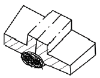
- 돌출된 모서리를 가진 평판 사이의 맞대기 용접
- 넓은 루트 면이 있는 평행 맞대기 이음 용접
- 부분 용입 한쪽면 K형 맞대기 이음 용접
- 한쪽면 U형 홈 맞대기 이음 용접
(정답률: 54%)
74. 접합하는 부재 한쪽에 둥근 구멍을 뚫고 판의 표면까지 가득하게 용접하고 다른 쪽 부재와 접합하여 용접하는 것은?
- 변두리 용접
- 플러그 용접
- 플레어 용접
- 플랜지 용접
(정답률: 79%)
75. V형 맞대기 용접에서, 판 두께가 t[mm]이고, 용접선의 유효 길이가 ℓ[mm], 인장응력이 σ[kgf/mm]인 경우, 완전 용입으로 고려할 때 용접선 방향에 직각으로 작용하는 인장 하중 P[kgf]를 구하는 식은?
- P = σ × ℓ × t
- P = σ / t × ℓ
- P = ℓ × t / σ
- P = t / σ × ℓ
(정답률: 57%)
76. 용접에서 홈 형태 중 가장 두꺼운 판에 적합한 것은?
- I 홈
- V 홈
- J 홈
- X 홈
(정답률: 53%)
77. 용접이음이 리벳이음에 비하여 우수한 점이 아닌것은?
- 용접이음은 리벳이음에서의 리벳구멍에 의한 유효단면적이 감소되지 않으므로 이음 효율이 좋다.
- 수밀, 기밀, 유밀이 우수하다.
- 설계상 제한이 적어 합리적 또는 창조적인 구조로 재작이 가능하다.
- 좌굴변형이 강하고 진동의 경우에는 감쇠능이 강하다.
(정답률: 69%)
78. 필릿 용접부의 용접비용 계산 방법에서 용접치수10mm의 필릿 용접부의 환산계수는 약 얼마인가?
- 8.2
- 6.1
- 4.3
- 2.8
(정답률: 23%)
79. 다층 용접의 용착법에 해당되지 않는 것은?
- 피닝법
- 전진블록법
- 빌드업법
- 캐스케이드법
(정답률: 74%)
80. 용접부의 크기나 구속도 및 용접부재의 흡수상태에 따른 용접조건 까지를 고려하여 용접부의 균열 발생 가능성을 평가하는 방법에 쓰이는 것은?
- 탄소 당량
- 용접균열지수
- 용접균열감수성지수
- 탄소량
(정답률: 53%)
5과목: 용접일반 및 안전관리
81. 용접입열 중 일반적으로 모재에 흡수되는 열량은 입열의 보통 몇% 정도인가?
- 25~45%
- 50~70%
- 90~100%
- 75~85%
(정답률: 50%)
82. 불활성가스 텅스텐 아크 용접에서 틀린 설명은?
- 텅스텐 봉을 전극으로 사용한다.
- 불활성 가스로 아르곤과 헬륨을 사용한다.
- 5mm 이상 두꺼운 판에만 사용한다.
- 직류 또는 교류 용접기 모두 사용된다.
(정답률: 80%)
83. 가스용접 작업 설명으로 맞는 것은?
- 반경강 모재의 용접에 사용되는 용제는 붕사 75%, 염화리튬 25% 이다.
- 산소-아세틸렌 불꽃은 불꽃심, 속불꽃, 겉불꽃의 3부분으로 구성되어 있다.
- 전진법의 용접속도는 후진법에 비하여 빠르다.
- 전전법의 홈 각도는 후진법에 비하여 작다.
(정답률: 58%)
84. 불활성 가스 텅스텐 아크 용접으로 알루미늄을 용접 하려 한다. 모재의 녹, 먼지, 산화막 등을 제거하며 좋은 품질의 용접제품을 만들기 위하여 청정작용이 있는 전원을 사용하고자 할 때 청정 효과가 가장 높은 극성 연결은?
- 직류정극성
- 직류역극성
- 교류역극성
- 반극성
(정답률: 70%)
85. 스터드 용접법의 종류가 아닌 것은?
- 아크 스터드 용접법
- 충격 스터드 용접법
- 저항 스터드 용접법
- 압력 스터드 용접법
(정답률: 34%)
86. 납땜의 용제가 갖추어야 할 조건 중 틀린 것은?
- 납땜 후 슬래그의 제거가 용이할 것
- 모재나 땜납에 대한 부식작용이 최소한일 것
- 청정한 금속면의 산화를 촉진할 것
- 모재의 산화 피막과 같은 불순물을 제거하고 유동성이 좋을 것
(정답률: 70%)
87. 용접법 중 압접법의 종류가 아닌 것은?
- 마찰용접
- 초음파용접
- 테르밋용접
- 저항용접
(정답률: 85%)
88. 피복 아크 용접봉 중에서 내균열성이 가장 낮은 것은?
- 티탄계
- 고셀룰로스계
- 일미나이트계
- 저수소계
(정답률: 32%)
89. 자동가스 절단에서 25mm 두께의 연강을 절단할 때 약 4.5m3/h 의 산소가 소비된다. 이 때 시간당 액체산소는 몇 ℓ가 필요한가? (단, 액체산소 1ℓ는 대기압에서 약 450ℓ의 산소 가스가 된다.)
- 12
- 20
- 10
- 15
(정답률: 54%)
90. 용접방법 중에 용접대상물에 직접적으로 접촉하지 않고 용접할 수 있는 것은?
- 일렉트로 슬래그 용접
- 불활성가스 텅스텐 용접
- 전자 빔 용접
- 논 가스 아크 용접
(정답률: 53%)
91. 접지 클램프르르 모재에 나쁘게(느슨하게) 연결하였을 때 어떤 현상이 나타나는가?
- 아크가 안정된다.
- 용접부의 용입이 불량하게 된다.
- 용접기가 파손된다.
- 전기의 소모가 줄어든다.
(정답률: 79%)
92. 암모니아 가스 용기의 도색으로 맞는 것은?
- 회색
- 황색
- 주황색
- 백색
(정답률: 57%)
93. 서브머지드 아크 용접ㅈ의 장점이 아닌 것은?
- 유해광선이나 흄 등의 발생이 적고, 비드 외관이 아름답다.
- 개선각을 작게 하여 용접의 패스수를 줄일 수 있다.
- 용융속도와 용착속도가 느리고 용입이 얕다.
- 인장강도, 연신율, 충격치 등 기계적 성질이 우수하다.
(정답률: 73%)
94. 정격 2차 전류 200A의 용접기로 전류 150A로 용접할 경우, 이 용접기의 허용사용률은약 얼마인가? (단, 정격사용률은 50% 이다.)
- 79%
- 58%
- 89%
- 67%
(정답률: 50%)
95. 이산화탄소 아크용접 시 작업자가 두통, 뇌빈혈을 일으키는 CO2의 체적은 얼마인가?
- 0.1%
- 3~4%
- 15% 이상
- 10% 이상
(정답률: 53%)
96. 교류 아크 용접기 종류에 해당 되지 않는 것은?
- 가동 코일형
- 전동 발전형
- 가포화 리액터형
- 가동 철심형
(정답률: 70%)
97. 용접조건이 같을 때 맞대기 이음의 1층에서 수축에 미치는 변태 팽창량이 가장 큰 것은?
- 연강
- 고장력강(HT 60)
- 9% Ni 강
- 고장력강(HT 80)
(정답률: 48%)
98. 용접작업 시 화재 폭발예방에 관한 설명 중 옳지 못한 것은?
- 용접작업은 가연성 물질이 없는 안전한 장소를 선택한다.
- 작업 중에는 소화기를 준비하여 만일의 사고에 대비한다.
- 가연성 가스나 인화성 물질이 들어있는 용기는 정으로 처서 분리시킨다.
- 유류탱크는 증기로 세척한 후 통풍구멍을 개방하고 작업한다.
(정답률: 67%)
99. 용접부의 검사법 중 용접성 시험에 해당되는 것은?
- 피로시험
- 부식시험
- 파면시험
- 노치취성시험
(정답률: 50%)
100. 플라즈마 아크의 종류에 해당되지 않는 것은?
- 이행형 아크
- 단락형 아크
- 비이행형 아크
- 중간형 아크
(정답률: 50%)
설명: 연삭작업을 할 때 절삭공구와 같이 재 연삭이 필요없는 이유는 자생작용 때문이다. 자생작용은 연삭작업 중에 발생하는 현상으로, 입자가 마멸-파쇄-탈락-생성이 되풀이 되면서 새로운 날카로운 입자가 계속해서 생성되기 때문에 공구의 날카로움을 유지할 수 있다. 따라서, 절삭공구와 같이 재 연삭이 필요없는 공구들은 자생작용이 잘 일어나는 공구들이다. 로딩은 입자가 공구에 끼어서 날카로움을 상실하는 현상, 글레이징은 공구 표면이 입자로 인해 매끄러워져서 연삭능력이 떨어지는 현상, 트루잉은 공구의 직경을 조절하는 작업을 말한다.